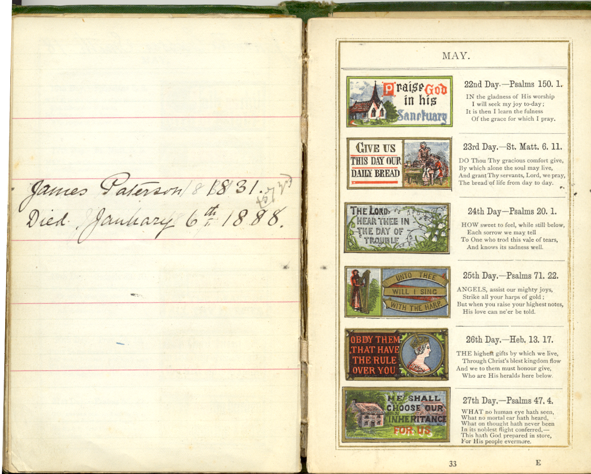

Newspaper cutting: "PATERSON - May 4, 1889 at her residence, 28 Womerah-avenue, Darlinghurst, the wife of John Paterson, of a son." Written next to this is the word, "Birth".
Jane PATERSON was born 25/12/1845. She was the sister of my great-grandfather, David who was born in 1840. Their parents were David Paterson and Eleanor Kirkpatrick. She kept a ‘birthday book’ that passed into my ownership via my Aunt Nora and my mother. This is my attempt at transcribing that book.
The illuminated Scripture Text Book: with Descriptive verses, an interleaved diary and coloured illustrations for every day by Edmund Evans. Published in London by Frederick Warne and Co.”
This hard-backed, green coloured book was used as a ‘birthday book’; it also recorded marriages and deaths. Against each daily space is the date, a small coloured picture and a tract from the Bible. A sample page is shown here.

This sample covers the month of May from the 22nd day to the 27th day. There is only one entry; that is for the 24th and shows “James Paterson 1831. Died January 6th 1888” James Paterson was her brother. As can be seen, the original entry was in pencil and has been overwritten in ink. Also in pencil, not overwritten can be seen “(57yrs”).
The book is a little fragile; some entries are faded or otherwise difficult to read. Many entries are in the form of newspaper cuttings. It is not always clear whether the entry refers to a birth or a death. I do not know when she started making entries in the book, there are some puzzling dates in the first few pages. I do not think that all the entries were made by her, looking at the handwriting it would seem that some names etc were actually entered by the person named. If anyone reading this can help make things a little clearer, please let me know.
My mother, as a child, knew ‘Aunt Jane’. I think she lived a short distance away. She thought that Aunt Jane was eccentric; she did not like having to go to her house. Other local children thought her a ‘witch’. (Jane that is!)
To keep downloading times as short as possible, I will not put any more pictures on this document. I may copy all entries in the future. I have tried to keep the punctuation the same as the original but where addresses are shown as several different lines I have, in many cases, done them in a linear form with comma separators. Before the actual entries start there are a number of introductory pages that have entries of different forms on them. I shall endeavour to transcribe these first.
Inside the front cover are three newspaper cuttings and two handwritten entries. These are the details.
Newspaper cutting: "PATERSON - May 4, 1889 at her residence, 28 Womerah-avenue, Darlinghurst, the wife of John Paterson, of a son." Written next to this is the word, "Birth".
Newspaper cutting “PATERSON – May 29, 1889 at 28 Womerah-avenue, Darlinghurst, Douglas Baird, infant son of John and Mary McLaren Paterson.” Written next to this is the word, “Death.”
Newspaper cutting “KIRKPATRICK – September 18, at the residence of Miss Rees, Mor-van, Waterloo, aged 57 years, Ann Isabella Kirkpatrick (Annie). Interment at Bebington to-day (Saturday), 21st inst., at 3 pm. (Friends please accept this – the only – intimation.)” Written next to this is the date “1901”.
Handwritten entry “Mrs Hughes 4 Victoria Avenue, Prestatyn. Rent 17.0.0 & 19.0.0 Large houses 25.0.0 & taxes”
Handwritten entry, “Mrs Oxton 16 Fair View Avenue, Slade Lane, Levenshulme, Manchester.”
On facing page are two handwritten entries and one newspaper cutting.
Handwritten – “From M.E.P.1 to J. Paterson June 4. 1878”
Handwritten Oh, Home! Our comforter and friend when others fall away to part with whom, at any step between the cradle and the grave, is always sorrowful. The Battle of Life.
Newspaper cutting (very faded) “SINCLAIR – February 18 at 115 Mount Pleasant aged 85 years. John Sinclair, M.D. Funeral at Anfield Cemetery to-morrow (Thursday) at 2 o’clock. No flowers. Friends please accept this – the only – intimation.”
The next page has, what appears to be, two handwritten entries.
Marriage: Heirs together of the grace of life. 1920.
Nov 18, 10.30am. William Faulds Holman to Edith Emily Paterson.
Nov 18, 2.30pm. Albert Horace James Velton to Marian Frances Paterson.
Nov 23, 2.30pm. Thomas Howarth to Gertrude Eleanor Paterson
Gertie. ‘Miss Paterson one of our most faithful Sunday School teachers and choristers was married to Mr Howarth amidst the warmest good wishes and congratulations of her fellow-workers, on the 23rd ulto. We are glad to know that her marriage will make no difference to her church activities.’ Copied from The Parish Magazine 1920.
Turning the page again, the left hand leaf is headed with the handwritten word “Marriages” and there are two newspaper cuttings.
The first has the handwritten label “1897” and is as follows, “Lishman – Paterson – February 3 at Oxton-road Congregational Church, by the Rev. R.G.Soper, B.A., W. E. Lishman to Edith, eldest daughter of David Paterson, Rock Ferry.”
The second has the handwritten label “189” (something missing there?) and is as follows. “Bathgate – Warke – Sept. 11, at Holy Trinity Church, Parliament-street, by the Rev. Richard Postance, M.A., assisted by the Rev. Canon Postance and the Rev. W.J.Cole, Christopher, eldest son of Mr. Archibald Bathgate, Cressington-park, to Marianne Wilson, only daughter of the late Dr. Lyle Warke, of 19, Upper Parliament-street.”
The facing page is headed with the handwritten, “1895 Atties daughter.” And has two newspaper cuttings that apparently refer to the same event.
Marriages. Dalzell – Kirkpatrick – March 14th, at St. Boniface’s Church, Bunbury, Cheshire, by the Rev. W.A.Edwards, M.A., Oxon. William Robert Dalzell, M.A., M.B., C.M. Edin., of 22 Slatey-road, Birkenhead, to Ruth, eldest daughter of Dr. Kirkpatrick of Bunbury, Cheshire.
MARRIAGE OF DR. DALZELL. The charming little village of Bunbury, near Preston Castle, Cheshire, was en fete last Thursday, in consequence of the wedding of Miss R.M.A.F.G. Kirkpatrick, daughter of Dr. Kirkpatrick, to Dr. W.R.Dalzell, of Slatey-road, Claughton. Dr. Kirkpatrick has lived in the neighbourhood for many years, and his daughter naturally was well known and highly respected by all the villagers and residents in the district. The ceremony took place in the historic old church at Bunbury, the sacred edifice being beautifully decorated for the occasion. Indeed, there were decorations everywhere, and the road to the church was spanned by magnificent arches of evergreen. Everybody attended at the church, and as the day was beautifully fine, the time was one of general rejoicings, and everything passed off with éclat. The service was choral throughout. The Bride (who was given away by her father) wore a handsome dress of rich ivory white duchesse satin, trimmed with old lace and finished with orange blossoms. Her veil was composed of Brussels net. She carried a bouquet of white exotics, and her ornaments were a diamond and sapphire ring, the gift of the bridegroom; a diamond and ruby butterfly brooch, the gift of Dr. and Mrs. Blake-Campbell; and gold bracelets, the gift of Mrs. Aspinall and Mrs. C. Kirkpatrick (sister of the bride), Miss Poole, Miss Griffiths, and Miss Walker – wore dresses of white China-silk, made in ‘Liberty’ style. Mr James Dalzell acted as best man to his brother. The ceremony was performed by the Rev. W.A. Edwards, vicar of Bunbury. An ‘At home’ was afterwards given at Birchfield House, the residence of Dr. and Mrs. Kirkpatrick. Among the guests present were Dr. Henry Churton, borough coroner, Dr. Barron, Dr. Blake-Campbell, Dr. Genmell, Dr. Macpherson, Dr. Westmacott, Mr.A.F.Moore, Mr. and Mrs. F.S.Moore, Mr W.S.Connacher, Mrs. Miller, Mrs. Walker (Prenton), Mr. And Mrs. Dyall, &c. The wedding gifts received were very numerous and included a handsome silver tea and coffee service from the Liverpool Association F.C., to which Dr Dalzell has been for some time medical adviser. In the afternoon the newly married couple left for their honeymoon, going first to London and afterwards on the Continent. On their return in a fortnight or so they will take up their residence in Claughton.”
The next entry is handwritten and puzzling. Did Jane Paterson spend some time in Moreton-in-Marsh, possibly as a teacher?
To Miss P----. Moreton-in-Marsh.
‘Until I saw the radiance of thine eyes
Methought no woman had the power to charm –
But since that day I find relief in sighs
And I am filled with sadness and alarm:
For one so sweet and gentle ne’er should be
Condemned to share a common lot like mine
I could not see thee linked to misery
Joy, peace, and comfort ever should be thine.’
G. Wray 1873
(schoolmaster)
On the facing page is one handwritten entry.
Eleanor Paterson. 2 Born 1810. Died December 3, 1874. (64 yrs old)
We now come to the part main of the book were entries should correspond to the printed dates. Some of the handwriting on is not very easy decipher. There are partial erasures and some crossing out. All entries are handwritten unless otherwise stated. Unreadable words will be shown as XXXX
2nd January “Lestia3 Paterson, born at Sydney – Jan 2. 1916”
3rd January “Eleanor Paterson4 Born Jan3. 1812, Died December 3rd 1874. (age 62)”
4th January “Gertrude Eleanor Paterson 1880”
5th January Newspaper cutting with inked in “1906”. “Marriages. Brugh – Scarratt – October 10, at the Cathedral, Singapore, by the Rev. C.H.Izard, Colonial Chaplain. Sheddan T. Brugh B.Sc., A.I.M.M., A.O.S.M., youngest son of the late J. Brugh, of Cloan, Romahapa, New Zealand, to May, youngest daughter of the late Josiah Scarratt, of Rock Ferry. (By cable.)”
6th January “Mary Devereux”
7th January “Herbert Paterson. ‘Chiltern’ Rhodes Avenue Narumburn N. Sydney.”
27th January “Edith Paterson. 1876”5
29th January “Jan 29. 1891. Sydney”
4th February “Mrs Olga Rimmer.6 631 Church Street, Toronto.”
10th February “S.J. Hide. b. 1847. Died”
11th February “Mary Ellen Paterson,7 b. 1849. Died Nov 7. 1915. 7pm. – buried in Lower Bebington Church Yard, Nov 10th 1915”
14th February “J.W.Paterson 1851. Carlton Cottage, Breck Road. Poulton.”
16th February “Annie Gaskell.8 Died Aug 17. 1880. Age 33 yrs at Broadwell.”
25th February. Newspaper cutting. “Inquirer – The 25th of February 1845, fell on a Tuesday.”9
Also, handwritten “Jane Paterson. Feb 25th. 1845 (Tuesday)”
26th February “William Rimmer.”10
1st March “S.J.Hide b. 1847”
3rd March “Eleanor Smith. Born 1836. Died Sept 24. 1887. (51 yrs)”
7th March “Emily Louisa Lewis 1863.”
21st March There are two words here, possibly “Timothy Cramer”?
23rd March “Lydia Meteyard 1832. Died May 3. at Nelson House, Haddon Rd. Rock Ferry widow of Thomas Meteyard, of L’pool. Interred at Bebington Cemetery, May 7. 1914.”
28th March “1895. May Smith”
30th March “Catharine XXXXX, Born Dec 1821. died March 30. 1916 (in her 95th. Yr) Interred at Flaybrick Hill Cemetery April 1st 1916.”
6th April “Miss Morrish. 8 Liversidge Road. Higher Tranmere.
(Beneath this, in the space for 7th April is a crossed out entry “Emily Morrish. Died Mch 6th 1912 at Dumfries”
21st April “David Stanley Paterson.11 1882.”
22nd April “1916 Kathleen Winifred Stripling”12
24th April “Martha Smith. Born 1863” and “XXX XXXXX. Died July 1926” plus two other words that I cannot make out.
25th April “M. K. Smith /66” This entry is crossed out.
26th April “Mgt K. Smith”
29th April “Clara Devereux”
30th April “William Rimmer13 1842. Died Feb 26th 1904 62yrs. Primary Carcinoma of liver. Secondary Asthenia”
3rd May “Harold Paterson 1892. Died 1907, Nov 19th. (Age 15)”
4th May “1889. May 4th Douglas Baird Paterson and died May 29th 1889. at Darlinghurst. Sydney”
5th May “K” or “H” “Ed--- ---death 1910 May 6”
10th May “Margaret Kirkpatrick14 born 1801. Died January 1886”
13th May “Thos. Fredc. Higgs 1835”
14th May “Sarah Thacker” also a newspaper cutting, “THACKER – January 9, at her daughter’s residence, 20, Kelvin-grove, Prince’s Park, Liverpool, in her 64th year, Sarah Thacker, of 34 Cross-lane, Newton-le-Willows. Interment at St. Helens Cemetery to-morrow (Thursday) at 12.30. (Friends please accept this-the only-intimation.)” Hand written on that cutting is the date “1899”
15th May Newspaper cutting “EWART – THACKER- July 18, at the Parish Church, Earlestown, by the Rev. T.J.Madden, of St. Luke’s, Liverpool and the Rev. T.R.Matthews, Vicar of Earlestown. Alfred B. Ewart to Clara N. Thacker, niece of Sir John Stainer.” Handwritten on that cutting is the date “1898”
16th May “Jennetta Casson Smith 18”
18th May Newspaper cutting “PATERSON – CHIDSON – April 16, at the Church of St. Thomas, Regent-street, London, W., by the Rev. C.Aubrey Finch. David Stanley15, only son of David Paterson, of Rock Ferry, Cheshire, to Margaret Hume, only daughter of Henry A. Chidson, of 11, Sackville-street, Piccadilly, W.”
24th May “James Paterson16 1831. Died January 6th 1888 (57 yrs)”
28th May “Annie Daw. 1855” This entry not very clear.
29th May “May Lythgoe. 1878”
No entries recorded for the month of June!
8th July “Mrs Henry Hird died at Ulverston. 1919. Age 65 yrs (Emma Scaife as was)”
22nd July “Frederick Roy Stripling17 1904”
23rd July “Mary Ellen Tillson 1887. Died”
27th July “Barbara Joyce Stripling 1909. Died August 31. 1914”
29th July “Bonnie Bray. 1864”
3rd August “Albert Duffin. 1876”
5th August “Aug 5 XX W. R. & J. P. Married18”
6th August - A name or signature that I cannot decipher.
12th August “W. Eric Lishman 1899”
14th August “Emma Walker” this has been crossed out, also “Mrs. Brierley 21 Carrington Road. Wallasey. 12.21st.1925”
19th August “Lena Paterson 1877”19
20th August “Elizabeth Naylor 1867”
24th August “Emily Hickman. 1876”
29th August “M. A. Morrish. 1844”
31st August “Barbara Joyce Stripling. 1909” This entry partially erased.
1st September “Sept 1. Lishman – Valentine, at Emanuel Church, Wargrave by the Rector (the Revd. E. B. Whilley) Dr. William Eric Lishman. of Plymouth, son of Mr. And Mrs. W. E. Lishman of Derby Park, Rock Ferry, to Dr. Dorothy Irine Valentine, younger daughter of Dr. Wm. & Mrs. Valentine J.P. of Stainer House, Earlestown.”
3rd September Looks like “Born at Sydney 1913”
6th September “Margaret Tillson. 1875”
8th September This entry has been almost erased but looks like “Mrs Brierley”
11th September “Frances Marion Paterson 1897” and “Mary Ann Hipwood”?
15th September “George Hipwood”
23rd September “Molly Paterson. 1912. Sydney”
24th September “John Paterson. 1847 ‘Longton’, Rhodes Avenue. Naremburn.20 North Sydney.”
3rd October “Thomas Hipwood”
8th October “David Paterson.21 Born 1805. Died 1875 Oct 3rd age 70 yrs” and “E. A. Wolstenholme 1852”
14th October “Margaret Paterson.22 Born 1849. Died Feb 24. 1865”
20th October Looks like “Selecia Molyneuy 1862”
27th October Looks like “T Robert Mitford Smith October 21st 1827. Died. Oct 13th 1913”
1st November “Robert P. Smith. 1858.”
6th November “Thos Kirkpatrick23 1814” also newspaper cutting “KIRKPATRICK-Jan, 13, at Mostyn-cottage, Parkgate, aged 76 years. Thomas Kirkpatrick, late of Liverpool. (Interment at St. James Cemetery, on Monday next, the 16th inst., at 3 p.m.)” Also, handwritten “Died, Jan 13. 1893. Born 1814 Died 1893 Age 79”
14th November “Edith Emily Paterson. Nov 14. 1894”
24th November “Nora Stripling.24 1905” and “Kate Graham”
27th November “E.R. Edwards. 10, Mellor Road”
29th November “David Paterson25 1840. Died April 11th (Friday) 1924. 84 yrs.” After the name ‘Paterson’ there is a word in brackets that could be (Junior?)
1st December “Sarah McIlroy. Born 1863.”
3rd December “Richard G. Roberts. Born 1864”
12th December Newspaper cutting “MARRIAGES. Clayton-Renwick – Dec. 12, at St. Luke’s Church, West Derby, by the Rev. A.Robinson, vicar, John Clayton, fourth son of William Clayton, Newburgh, Lancashire, to Eliza Mary Renwick, daughter of the late Charles Kerr Renwick, R.N., Rock Ferry.” Hand written next to this is the date “1891”
14th December “Arthur Paterson 1885”
15th December “Lizzie Daw. 1856”
18th December “8, Fairfield Street. Barr Hill. Pendleton. Manchester. Up 29/24(?)”
19th December “Lydia Martha Lewis 1864.”
24th December “Elizabeth Kirkpatrick Mildrum Born 1810. Died Dec 24th 1864. 54 years”
That is the end of the section with daily spaces for entries. There now follows several pages of notes etc.
“St Paul’s Church, Rock Ferry. Dio Ches. Cousels £24. Fees £20 Pew Rents £70. Ex Cou.£101 off £24. Gross inc £239. Nett £217 & ho. Pop. 10,000. Patrons – Trustees”
Facing that page are three more entries. The first one is hand written.
“1830 Paterson. Kirkpatrick July 24th 1830. At Christ Church Hunter Street Liverpool David Paterson son of James Paterson of Glasgow & Linlithgow, to Eleanor, youngest daughter of John Kirkpatrick of Liverpool, late of Killybegs, Donegal, Ireland.”
Newspaper cutting “WALKER-January 31, at 92 Prenton-road East, Birkenhead, in her 75th year, Isabella, relict of the late J. M. Walker. Interred at Flaybrick Hill Cemetery on Wednesday.” Bears the handwritten date “1915”.
Newspaper cutting “MARRIAGES Brierley-Melling – June 21, at St Paul’s Presbyterian Church, Tranmere, by the Rev T.W.Macpherson, M.A., John, eldest son of Charles Edward Brierley, Rock Ferry, to Jessie Lilian, eldest daughter of James Melling, Higher Tranmere.” Bears the handwritten date “1905”.
Next two pages have two entries.
“Rimmer – Paterson. 1886. Thursday Aug 5th at Birkenhead R O. William Rimmer to Jane Paterson both of Rockferry.”26
Happier, more blessed, he by far who loves even though he errs because he loves, Than he who questions others deeds but himself does little because his heart is cold.
- Closing words of sermon by Rev H. B. Colchester Vicar of All Saints, Stoke Newington. Preached in St. Paul’s Cathedral. Sunday Evening Sept 17th 1905”
A few pages further on one of the previous entries is repeated and a postscript added.
St Paul’s Church, Rock Ferry. Dio Ches. Cousels £24. Fees £20 Pew Rents £70. Ex Cou.£101 off £24. Gross inc £239. Nett £217 & ho. Pop. 10,000. Patrons – Trustees
Copied from ‘Church Family Newspaper 1904’
On the facing page are three handwritten entries.
“Edith Mary Hollier27 Born November 10th 1880. Christened March 6th 1881, at St. David’s Church Moreton-in-Marsh.”
“Mary Caroline Fletcher. Christened at Loughborough Church. 1873… Died Feb 15th 1875 aged 2 yrs.”
“Margaret Kirkpatrick Smith Born April 25 1867 Christened at St Mary’s Church B’head.”
On the next page are two entries, one is crossed out, but they both say the same with no material differences.
Caton. Venebles. At Christ Church. Claughton. June 20th 1893 by the Revd. William Venebles M.A., uncle of the bride, Hugh eldest son of Thomas Caton to Lily, second daughter of John Kendrick Venebles of Birkenhead.”
The next four pages have numerous entries, some are crossed out.
“Mrs Daw Sandy Lane Brewood Stafford”
“Mrs Luxton 120 Oxton Road B’head” Before that address was decided upon she had written ‘118’ and ‘200’ ‘Claughton Road’
This is crossed out “Mrs Gill 62 Whitford Road. Higher Tranmere”
This is crossed out and the surname is not clear “Mrs Corscadeu 44 Ferndale Road Hoylake”
“Mrs Hide 196 Claughton Rd. B.head”
This is crossed out “Mrs Jones (Myfod Cottage) 287 Old Chester Rd. South Tranmere”
This is crossed out and marked with the word “Dead” “Mr J. Lunt ‘Strathavon’ Mostyn Avenue West Kirby”
“Apartments. West Kirby Mrs Hanson 4 Tynwald Road. Mrs Syers (crossed out “8 Tynwald Road”) 2 Tower Buildings. June 23 to 30th 1904”
This is crossed out “Mrs. Bell 36 South Hill Rd. Oxton”
“Mifses (that is how it looks) Morrish 8 (“4” crossed out) Liversidge Road Higher Tranmere”
This is crossed out and marked with the word “Dead” It is almost the same as a previous entry. “Mr James Lunt ‘Strathavon’ Mostyn Avenue West Kirby”
As if to confirm the above, a newspaper cutting with a handwritten “1904” “LUNT-July 23, at his residence Strathavon, Mostyn-avenue, West Kirby, in his 37th year, James the beloved husband of Daisy and second son of the late Peter Lunt, Great Crosby. Interment at West Kirby Church, to-day (Tuesday) at 3 o’clock. (Friends please accept this-the only-intimation.)
The next three entries appear to come under the heading “Apartments West Kirby” and are as follows.
Crossed out “Mrs Syers 8 Tynwald Rd”
“Mrs Knowles 16 South Rd.”
Crossed out “Miss Morrish. Ferdale Hillside Heswall” This entry is also marked “Terms for apartments” (the word ‘apartments is crossed out) “letting the houses May 25/- June 30/- July 35/- Aug 40/-“28
Crossed out “Mr Robert Miller 28 Rock Lane West, Rock Ferry”
Crossed out “Mr. And Mrs. Shakeshaft ‘Sans-Souce’ Little Sutton, Cheshire.”
“Mr Stockham, Surveyor of Taxes, 48 Hamilton Square, Birkenhead” This entry is marked “July 3/05”
“L & N. W. Rails, Secretary’s Office, Euston Station, London N.W.”
Crossed out and marked “March 1905”. “Rev. Watson. St. Paul’s – to V. of Aberford, Leeds. Patrons, Orial College, Oxford. Rev H. E. Willson, St. Mark’s N.F. V. of Kirbymoorside with Gillamoor. Patron, the Earl of Feversham”
Crossed out and marked with what looks like “Dead”. “Mrs. Mary A. Priest, 20 Gresford Avenue, Smithdown Road. E., Liverpool.”
Crossed out “Mrs. Olga Rimmer, 99 Alexander Street, Toronto, Canada N.A.”
“Messrs Monkhouse & Dixon, Solicitors, Commerce Chambers, Lord Street, Liverpool.”
“Mrs Syers, 2, Tower Buildings, Banks Road, West Kirby.”
“Mr. W. D. Cookson, 6 Primrose Hill, Low Fell, Newcastle”
The next page has an entry that refers to her grandparents, her mother and her mother’s brothers and sisters. It is in two sections.
“Ireland. County Donegal. Elizabeth Ellis: born 1784, died 1827. Married 1800 to John Kirkpatrick: died 1833 - Family
The next entries come under the heading “Died.”
“1864 Elizabeth Mildrum (Auntie) Dec.”
“1865 Margaret Paterson Feb 25. Age 15”
“1874 Eleanor Paterson. Dec 3. Age 64(?)”
“1875 David Paterson Oct Age 69”
“1886 Margaret Kirkpatrick Jan. Age 85yrs”
“1887 Eleanor Smith. Sept. Age 51”
“1888 James Paterson. 56”
“1889 Douglas Baird Paterson (Australia)”
“1890 Eleanor Mitford (‘Smith’ crossed out) Waters. 29”
“1891 Ada Priest 24”
“1892 Cousin Jim Paterson & John Priest”
“1893 Uncle Thomas Kirkpatrick”
“1895 R. P. Smith’s son”
“1898 Mary Anne Kirkpatrick”
“1899 Robt. Ellen & JeaXXX Paterson”
“1904. Feb 26. William Rimmer. Age 62.”
“1907 Harold Stanley Paterson. Age 15”
“1908 William John Paterson. May Age”
“1908 Anne Gilbertson. Aug 27th. And interred at Flaybrick-hill Cemetery Aug 31. Wm. Rimmer’s sister.”
“Mary Dale: died Dec 30. 1916. at Waterloo.”
“Mary Paterson. Feb 12 1917. at Bootle. Widow of William John Paterson: interred at Blackrod Cemetery.”
“1915. Jan 31. at 92 Prenton Road East. B’head in her 75th yr. Isabella, relict of the late J. M. Walker. Interred at Flaybrick Hill Cemetery on Wednesday.”
Next comes a poem, written across two pages and headed “The Book of Life”.
We may write our names in albums,
We may trace them in the sand,
Or may chisel them in marble,
With a firm and skilful hand.
But the pages soon are sullied,
Soon each name will pass away
Soon each monument will crumble,
Like all earthly things decay.
But, dear friends, there is an Album,
Full of leaves of snowy white,
Where no name is ever tarnished,
But for ever pure and bright.
In that Book of Life – God’s Album,
May your name be penned with care,
And may all who here have written,
Write their names for ever there.
The next entries are bracketed together and appear to refer to the career of a clergyman.
“June 28th 1908. Sunday Evening. Lower Bebington Church. – To B’head. 29/08. ‘A prosperous journey by the will of God’ Rom 1 10.”
“June 29/08. Richard Battison Lowe. Westbank Road- T.C.D.30: B.A. 1858, M.A. 1860, F.C. Tranmere 1859 & 60, Newton-in-Makerfield 1860 – 65, 70 – 74, 79 – 80. Woodchurch 1865 – 70, Rector of Mkt. Bosworth 1885 – 86. PleXXoustall” (I cannot read this and have been unable to find anything similar)” – 1889 –99.”
Next, is an entry entitled “Special G.F.S Hymn.”. At the end it is marked “From C.F.N. Jan 14. 1916.”
True friends help each other,“From C.F.N. Jan 14. 1916.”
Gladly give and take,
Bear with one another,
For sweet Friendship’s sake.
E’en when parted, always’
Love each other still’
Both in joy and sorrow,
Sharing good and ill.
Onward in life’s journey,
Clasping hand in hand,
Thus they seek together’
Friendship’s native land.
Happy home where Jesus,
Best and truest Friend,
Waits for Christian pilgrims,
At their journeys end.
The next four entries are on facing pages.
“Mrs Jack Lewis, Universal Garage, Umtata, S.A.”31
“Mr R P Smith, 54 Whitford Road, Higher Tranmere.”
“Jane Kirkpatrick died Nov. 5. 1874 aged 65 years. Interred at Bebington Cemetery”
“Sept 18. 1901. Anne Isabel – daughter of Jane Kirkpatrick” (“died” crossed out) “and Thomas Kirkpatrick. Aged 57 years.”
The next two pages have a number of handwritten notes.
“May 25th. 1881. at North Newington, Frederick George Gretton N.T., Curate of Broughton-with-Newington, Oxfordshire, only surviving son of Frederick Edward Gretton Beeton of Oddington, Gloucestershire, aged 34 years.”
“August 17th. 1880 at Broadwell, Annie Bastock. Aged 33 yrs.”
“Thomas Kirkpatrick at Liverpool. Feb 26. 1878 (Mothers cousin)”
“Eleanor Smith at Birkenhead September 24. 1887. interred at Flaybrick Hill, B’head. Sept 28. 1887. Age 51 years”
“James Paterson, born May 24th 1831. Died January 6th. 1888.”
“Margaret Kirkpatrick died Jan 1886 and interred at Smithdown Lane Cemetery, Liverpool.”
“Josiah Courter died Sept 1888.”
“Birth 1889. May 4, at her residence, 28 Womarah Avenue, Darlinghurst, the wife of John Paterson, of a son.”
“Death 1889. May 29, at 28 Womerah-avenue, Darlinghurst, Douglas Baird, infant son of John and Mary McLaren Paterson”
“1890. Eleanor Mitford Smith – born November 5. 18XX. Married September 17. 1889 Thos W., Died July 21. 1890. Interred at Flaybrick Hill Cemetery July 23rd 1890.”
“Eleanor Mitford Waters” (Probably the same person referred to above)
The next page continues in a similar vein.
“1892 April 28, at 31 Canning Street, L’pool aged 57 years, Thomas Ellis Priest. Will be interred at Smithdown-road Cemetery, tomorrow (Saturday) at 12 o’clock. (No cards)”
“1903. Feb 6th. James Rimmer, suddenly, heart disease. Toronto. (Brother to W.R.)32
Newspaper cutting “MOON – Dec. 18 at 82 Rockfield-road, Anfield, Lizzie, the beloved wife of Thomas Moon; deeply regretted.”
“1904. Feb 26th. At 34 Haddon Road, Rockferry, William Rimmer son of the late James Rimmer of Thornton Hough & Mersey Street, Birkenhead. R.I.P.”33
“1908. Aug 27th. At 32 Fountain Street, Higher Tranmere. Anne” (“Rimmer” crossed out) “Gilbertson (W.R’s sister) Age 76. Interred at Flaybrick Hill Cemetery Aug 31. 1908.”
Next come four more entries on two facing pages.
“Mgt Luxton born 1846 died Feb 14. 1874”
“1919. Nov 28. Mgt (Graham) Jones buried” (“died” crossed out) “Dec 3. Bebington Cemetery”
“Mary Southwick. died Ap 19. 1922.”
“A former schoolmaster of St Mary’s, Birkenhead. The Revd. B. Burgon died June 21st. 1913 at Doncaster. Age 73, Vicar of Stamforth 15 years. Before this – Vicar of “ (I am not sure of first word) “PXXXston with Featherstone 17 years, before that, curate of Featherstone. (Copied from Mrs. Harrison’s letter to Mrs. Hide) (Nov 1913)”
The next two pages are as follows.
“Gloria. Dearest, delighted to receive Christmas greeting; could not acknowledge before; should like to see you; fondest love; write me. Jan 9. 1909.”
“Joy. Kind thoughts of remembrance friend. Remembrance adds a link to friendship’s golden chain. Forget, no, never. Jan 26. 1909.”
A newspaper cutting headed “Death and Funeral of Dr. Kirkpatrick”Written at the side in pencil is what looks like “A.D. 1839” and written in ink at the bottom of the cutting is “1907 68 yrs.”
“It is with regret we record the death of Dr. Kirkpatrick, who for over 30 years practised in Bunbury. The deceased retired a few years ago, and went to live at Audlem, where he died in the early part of last week. It was his wish to be laid to rest in the old churchyard, and his remains were conveyed from Audlem to Bunbury on Thursday. The service was taken by the Rev. Stapleton Cotton, vicar of Audlem. The hymn ‘O Rest in the Lord’ was sung by the choir, and at the service the Dead March in ‘Saul’ was played by the organist, Mr Taylor. The choir sang at the grave-side the hymn ‘For ever with the Lord.’ Amongst the mourners were Mr. And Mrs. Mathews, Mrs. Dalzell (daughters and son-in-law), Mr N. Myott, Dr. Shaw, Mr. Jones, Mr. Hayes, Mr. Shore, Mr. J. Brown, Mr. C. Willis, Mr. G. F. Dutton, Mr Geo. Hewitt, etc. Beautiful floral tributes were sent by Connie and Mr. Mathews, Ruth, Mamma, Patsy, and Baby Mathews, Toosie and Billy Dalzell, Dr. Dalzell, Mrs. Reginald Polehampton, Mr. P. Robinson, Mrs. Mathews and family, Mr McLean Myott, Mr. And Mrs. Mortimer. The coffin bore the inscription – ‘Arthur Kirkpatrick, died Oct. 8th, aged 58 years.’”
A newspaper cutting headed “Death of Sir John Stainer.” This is marked “From L’pool Echo (Mch 31) Apr. 1. 1901”
“An Oxford correspondent telegraphs that Sir John Stainer died at Verona yesterday. Sir John was born in 1840, and was professor of music at Oxford.
The deceased musician, who was the son of a Southwark schoolmaster, was also inspector of music to the Educational Department, Whitehall. He was educated at St. Paul’s Cathedral choir school, Christ Church, St. Edmund Hall, Magdalen College, Oxford. He was an honorary fellow of Magdalen College, and during his career the degrees of M.A., Mus.Doc.Oxon., D.C.L., and Mus.Doc.Durham, were conferred on him. At the age of sixteen he became organist to St. Michael’s College, Tenbury, and three years later, at the early age of nineteen, was made organist at Magdalen College, Oxford. In 1861 Dr. Stainer had been appointed organist of the University Church, by the then Vice-Chancellor, the Rev. Dr. Jeune, late Bishop of Peterborough, and he held this appointment till 1872, when he succeeded Sir John Goss as organist of St. Paul’s Cathedral, London, which post he resigned early in 1888. He composed a large number of anthems and Church services, as well as songs of a secular character, and books on harmony and the organ. He had achieved a high reputation as a scientific musician. A cantata by Stainer, The Daughter of Caius,’ was composed for and produced at the Worcester Festival, 1878. In the same year he was nominated by his Royal Highness the Prince of Wales one of the jurors of the Exhibition of Paris, and at the close of it he was appointed a Chevalier of the Legion of Honour. In 1883 he was appointed inspector of music to the Education Department, and was also nominated by the Prince of Wales member of the Royal College of Music. In 1888 he received the honour of knighthood, and in 1889 was appointed professor of music in the University of Oxford.”
“’Glenthorne’, Stuart Avenue.”
The next two pages of entries are, except for the first, of newspaper cuttings.
“Margaret Luxton. Born 1846. Died Feb 14. 1874.”
Newspaper cutting marked “1896”. “WALKER – July 19 at 31 Kingsland-road, Birkenhead, Annie, widow of J.R. Walker, of Old Calabar. Interment at Flaybrick-hill, today (Wednesday), at noon. (Friends will please accept this-the only-intimation.)
Newspaper cutting marked “Died July 5th. 1898.” “KIRKPATRICK – July 5, at 19, Upper Parliament-street. Mary Ann, widow of Thomas Kirkpatrick. (Interment at St. James’s Cemetery to-morrow (Friday), at 4 o’clock. Friends please accept this – the only- intimation.)
Newspaper cutting marked “1902”. “WALKER-October 30, at 14 Eaton-road, Claughton, Annie Grant Walker (Grantie), daughter of the late Captain Walker, of Oxton. Interment at Flaybrick-hill Cemetery, to-day (Saturday), at 1 p.m.”
Newspaper cutting marked “1907”. “KIRKPATRICK- October 8, at his residence, Springfield Lodge, Audlem, Arthur Kirkpatrick, M.A., late of Bunbury. Funeral at Bunbury Parish Church, today (Thursday), at 3 p.m.”
Newspaper cutting marked “(Feb 7.)” “PRIEST- February 5, at the residence of her son, W. H. Priest, 13 Victoria-terrace, Prince Alfred-road, Mary A., widow of the late Thomas E. Priest. Interment at Smithdown-road Cemetery, today (Tuesday), at 12 o’clock.”
Newspaper cutting. “WALKER- May 16, at 92, Prenton-road E., Birkenhead, aged 70 years, James Morgan, the beloved husband of Isabella Walker. Interment at Flaybrick-hill Cemetery, To-morrow (Thursday), 18th inst., at 3.30 p.m. (Friends please accept this -the only- intimation.)”
Newspaper cutting headed “Funeral of Mr T. E. Priest.” And marked in ink “Daily Courier. May 2. 1892.”
“The remains of Mr. T. E. Priest, estate agent and accountant, of Clarendon-buildings, South John-street, who died on Thursday after a brief illness, were on Saturday interred in Smithdown-road Cemetery, the large attendance of personal friends and business acquaintances at the graveside testifying to the esteem in which the deceased gentleman was held. The cortege left 31 Canning-street, the late residence of Mr. Priest, shortly before noon, the hearse in which the coffin was conveyed being literally filled with beautiful floral tributes, twenty-six in number. The principal mourners were Mr. W. J. Priest, Mr. H. Priest, Mr. J. Priest, Mr. J. A. Willox,M.P., Mr. J. Vicars, Mr. Luther Watts, Mr. Matthew Kelly, Mr. R. F. Kelly, Councillor Watts, Mr. T. J. Smith, Mr. A. Rogers, Mr. J. H. Kelly, and Mr. T. Wilding. Those assembled at the graveside included the Rev. W. M. Barrow, Dr. Dawson, Dr. A. Samuels, Alderman T. Hughes, Councillor Grierson, Major M. H. Larmor, Messrs. W. L. Jackson, R. B. Greene, Rd. Jones, J. O’Neill, R. Sutton, W. S. Brice, G. S. Irven, R. Burn, R. Thompson, C. Huxley, J. Ellis, J. Bailey, W. Boumphrey, J. Higgs, A. Welsh, M. Green, M. Parker, W. H. Blain, C. Duckworth, Wm. Bennett, M. C. C. Magrath, I. Bennett, J. H. Quiggin, S. H. Parkinson, R. Halliwell, J. Hampson, T. Parker, T. Vernon, T. Buxton (Aughton), H. M. Molyneux, F. M’Knight, J. Bristowe (representing the Infirmary for Children), A. Gibson, J. Queen, J. F. Snape, E. Dowling, H. Parker, John Jones, Louis Heintz, Joseph Bell, Joseph Robinson, John Holmes, Jas. Rowe, B. Mitchell, J. H. Gair, H. D. Clark (representing Consumption Hospital), Jas. Allan, H. B. Moore, C. R. Copeman, D. Kerr, H. Durandu, J. H. Goodyear, H. E. Brackell, J. Thompson and S. Starbuck (Constitutional Association), T. Wright, T. Backhouse, R. L. Bogue, E. H. Butcher, &c. Sir David Radcliffe was unable to be present but sent his carriage. The officiating clergymen were the Rev. T. Graham (St. Bride’s) and the Rev G. C. Dicker (Birkenhead). The coffin was of polished oak, with panelled sides and brass mountings, the inscription on the plate being ‘Thomas Ellis Priest, born 12th February, 1835, died 28th April, 1892.’ Messrs. Watts and Co., Compton-house were the undertakers.”
Newspaper cutting “Gloria – Dearest, delighted to receive Christmas greeting; could not acknowledge before; would like to see you; fondest love; write me. 7347j12”
We now come to the last page and the inside of the back cover, the entries of which are as follows.
Newspaper cutting apparently marked “Jan 8 1899” “RIMMER- January 8 at his residence, Rose Cottage, West Kirby, Joseph Rimmer, formerly of Liverpool, the beloved husband of Sarah Anne Rimmer. Interment at Ford at 3 p.m. to-day (Thursday).”
Newspaper cutting marked “1901” “GAVEN- November 26, of pneumonia, at 6 Sussex-street, Birkenhead, aged 57 years, Charles, second son of the late Peter Gaven. Interment at Flaybrick-hill Cemetery, today (Friday), at 11.45. R.I.P. (No flowers)”
Newspaper cutting marked “1904” “RIMMER- February 26, at 34, Haddon-road, Rock Ferry, aged 62 years, William Rimmer, son of the late James Rimmer, of Thornton Hough, and Mersey-street, Birkenhead. R.I.P.”
Newspaper cutting marked “From L’pool Echo Friday March 25th 1904” “Mr. William Rimmer, of Haddon-road, Rock Ferry, Cheshire, who died on the 26thth ult., left estate valued at £1,704 15s 9d gross, and at £1,363 17s 5d net.”34
Newspaper cutting marked “1904” “SCARRATT- January 2, at 93 Bedford-road, Rock Ferry, after a short illness, aged 62 years, Alice the dearly-beloved wife of Josiah Scarratt, formerly of Thornton Hough. Interment at All Saints, Thornton Hough, to-morrow (Tuesday), 5th inst., at 2 p.m. (Friends please accept this – the only – intimation.)”
“’I have loved justice and fled from iniquity; wherefore here I die in exile’ said Hildebrand upon his deathbed. They will be the closing words of most lives that have followed truth.’ (Chandos.) ‘There are liberties sweeter than love: there are goals higher than happiness.’”
Newspaper cutting headed “Death of Rev. A. J. Tomlin – Result of an Accident.” “All Birkenhead will regret to hear of the death of the Rev. Alfred John Tomlin, the aged vicar of St. Luke’s Church, Lower Tranmere. Mr. Tomlin, who was eighty-three years of age, had been at St. Luke’s for nearly thirty years, and being exceedingly independent, and at time somewhat eccentric, he was well know throughout the borough. He was educated at Queen’s College, Cambridge, where he took his B.A. degree in 1844, in which year he was ordained deacon at York, and the following year priest at Ripon, and in 1872 he came as curate to Tranmere, prior to which he was curate at Bradford (1844-46), and at Liverpool (1846-72). In 1883 he was appointed vicar of St. Luke’s, which he held at the time of his death. In spite of his advanced age, Mr. Tomlin was very active, and took long journeys afoot. A short ago, while crossing a Liverpool thoroughfare, he was knocked down by a cab, and for a man of his years this was a serious matter. He recovered from the shock, and was apparently returning to his usual health, but a few days ago he had a relapse, and died on Wednesday, at his residence, Holt Hill, Tranmere. The funeral takes place at Wallasey Cemetery to-morrow.
Newspaper cutting “TOMLIN- October 30, at 77, Holt-hill, Tranmere, aged 83 years, the Rev. Alfred John Tomlin, B.A., Vicar of St. Luke’s Church, Lower Tranmere. Interment to take place At Wallasey Parish Church, to-morrow Saturday. (No flowers, by request.)”
1: M. E. P. may have been her sister-in-law, Mary Ellen Paterson (nee Bromley)
2: This is probably her mother, nee Kirkpatrick. I have her date of birth as 3/1/1812 but the same date of death. See note 4 below.
3 It looks like ‘Lestia’
4 Probably her mother, see note 2 above.
5 Edith Paterson was her niece
6 It looks like ‘Rimmer’
7 Her mother.
8 It looks like ‘Annie Gaskell’, but I am not very sure.
9 Her birthday.
10 Her husband.
11 A nephew.
12 My mother and her date of birth.
13 Her husband.
14 An aunt of hers.
15 Her nephew, born 21/4/1882.
16 Her brother.
17 My Uncle Roy and his birth date.
18 Probably recording her marriage to William Rimmer.
19 My grandmother and Jane’s niece.
20 Looks like Naremburn, but see entry for 7th January
21 Her father.
22 Her sister.
23 Her uncle.
24 My aunt Nora and her birth date.
25 Her brother and my great-grandfather.
26 This refers to her own marriage. She was 41 years old at the time.
27 Edith Mary Hollier is shown on the 1881 British census as 4 months old, born 1880 and living with the Hollier family at Bourton-on-the-Hill, Gloucester. Her relationship is shown as ‘other’.
28 25/- is 25 shillings or £1.25; 40/- is 40 shillings or £2.
29 Her mother
30‘ T.C.D.’ Is this Trinity College, Dublin?
31 This would seem to be Umtata in South Africa
32 “W.R.” was her husband William Rimmer
33 Recording the death of her husband
34 This and the previous article refer to her husband
Page